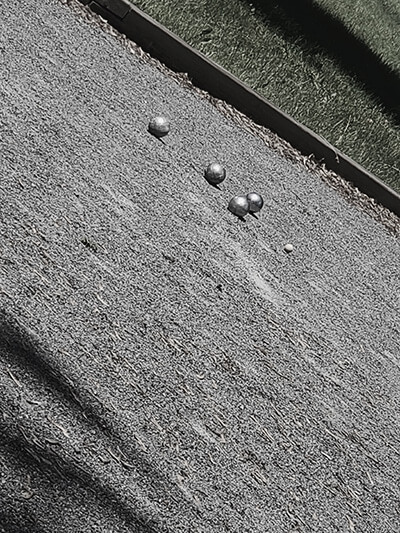
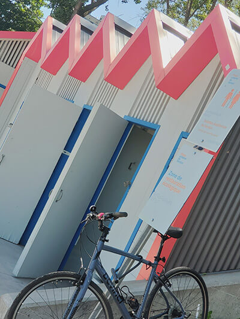
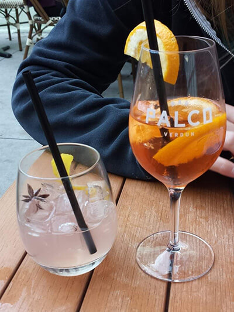

Points d'intérêts

Terrain de pétanque au bord de l'eau de Verdun
Tous droits réservés 2022, Jennifer Gauthier
La vengeance est un plat qui se mange froid, Pétanque!

Magnifique vue de la plage de Verdun
Tous droits réservés 2022, Jennifer Gauthier
Se chauffer la couenne à la plage de Verdun

Terrasse du bar Palco à Verdun
Tous droits réservés 2022, Jennifer Gauthier